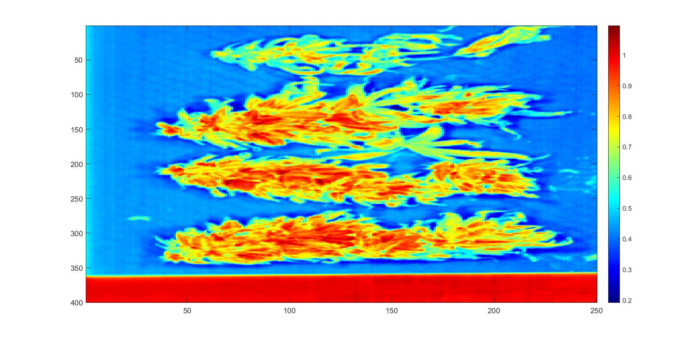
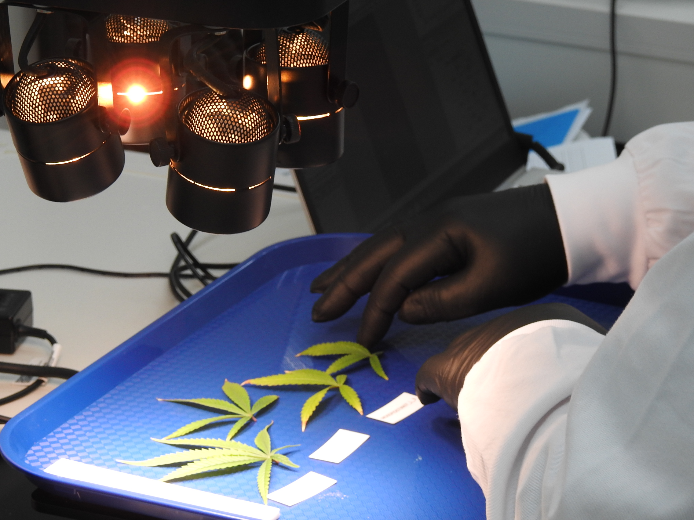

Home

Welcome to the Hyperspectral Imaging Group at the University of Waikato. We are a team of engineers and computer scientists working on computational imaging methods for hyperspectral imaging (HSI) technology through open-source platforms. We prioritise software-hardware integrated methods with machine learning and AI-informed image acquisition protocols. Our website serves as a hub for our software, hardware and hyperspectral database.
What we are working on#

|

|
| Estimating cannabidiolic acid content of Cannabis sativa L. from near-infrared hyperspectral images | |

|

|
| Taking Hyperspectral Images | |
|
|
|
|
|
|
| Lichen work | |

HAPPy Software#
We have developed an in-house HAPPy software, which is abbreviation for Hyperspectral Applications Platform in Python. This is a platform that streamlines the workflow for hyperspectral data acquisition, annotation, analysis, and the exploration of machine learning algorithms. HAPPy is intended to allow non-experts to interface easily with our specialised toolboxes, models and algorithms to facilitate quicker experimentation and innovation in HSI.
Our Hardware#
We have 2 hyperspectral cameras alongside a custom multi-instrument laboratory system for these cameras, and portable in-field imaging. Our hardware includes the Specim IQ camera (400-1000nm), the Specim FX-17 camera (900-1700nm), a rotary stage, and multiple halogen lighitng systems to capture high-quality hyperspectral data.

Our Team#
Our Group members you can see in the Team

Publications#
Explore our publications to access the detailed findings and contributions from our team.